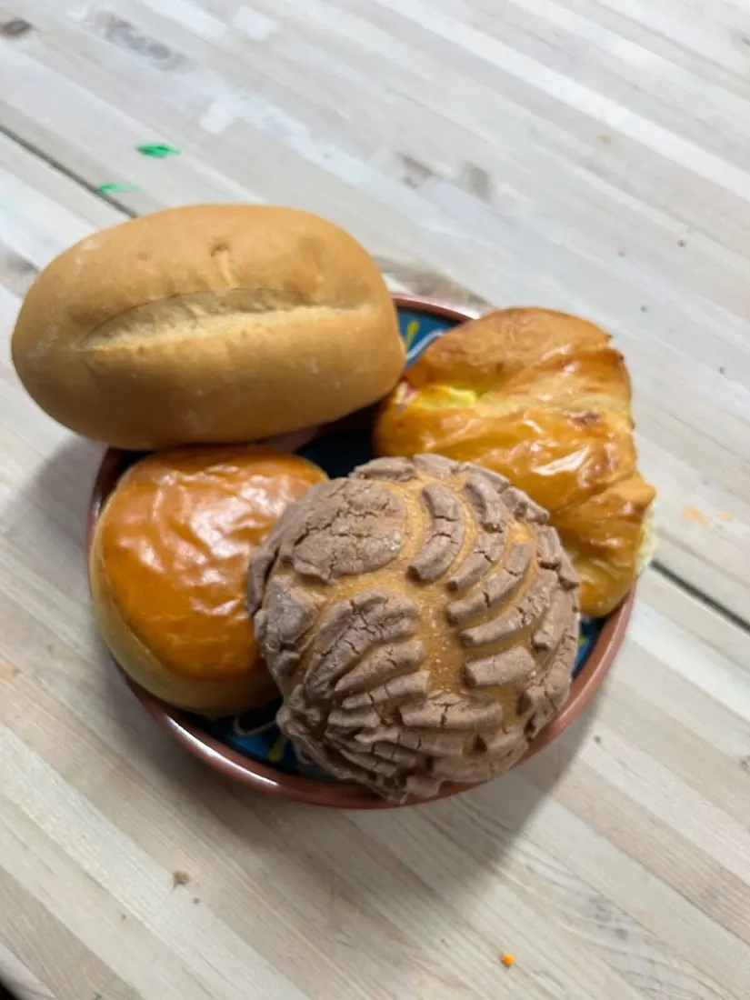
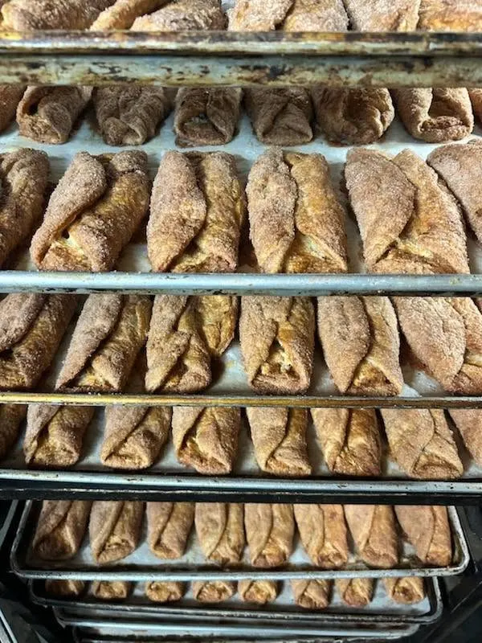
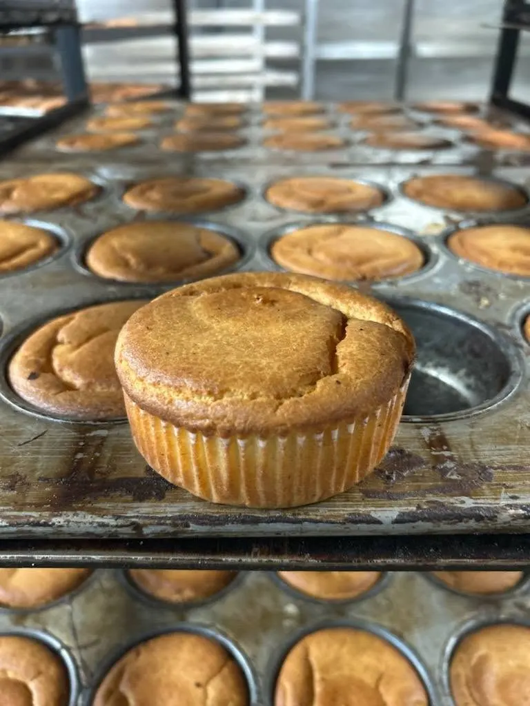
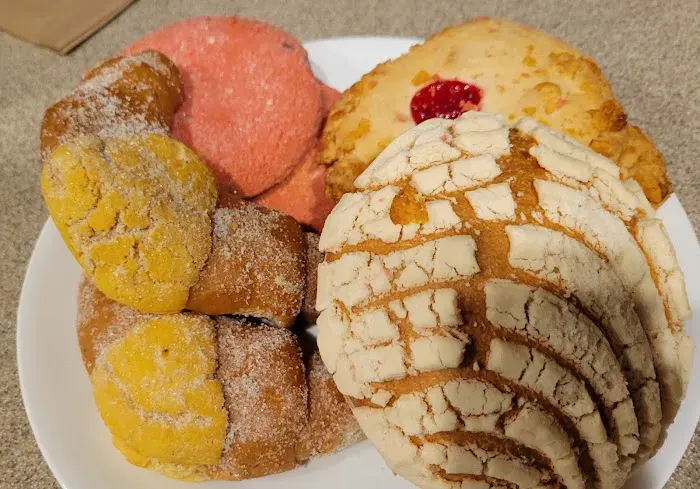
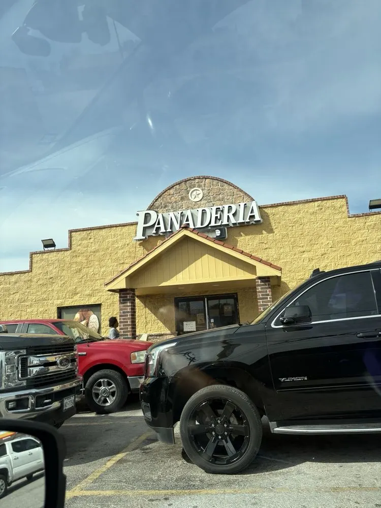

Concha (Vanilla)
The icon. Soft, pillowy bread with a crackly sugar shell.
Price at pickup
Conchas, bolillos, churros and the best tres leches in Grand Prairie — made with corazón for 18 years, right here in DFW.

Warm bread hits the shelves every morning. Come early for the softest conchas — and the bolillos (they fly!).
Real pumpkin in the empanadas, homemade-style buñuelos, marranitos and cortadillos. Just like abuela's.
Tres leches, birthdays, quinceañeras, graduations. Great prices — many treats under a dollar.
Tap + to build your order for pickup. Our selection changes daily — we'll confirm what's fresh when we reach out.
The icon. Soft, pillowy bread with a crackly sugar shell.

Same pillowy dough, chocolate shell.

Buttery, flaky Mexican croissant.
Sweet 'peach' bread with a sugared crust.

Soft gingerbread piggy cookie — a fan favorite.

Real pumpkin filling, folded and baked fresh.
Tender coconut-and-spice sweet bread square.

Crisp, cinnamon-sugar fritter — just like abuela's.

Rich, cheesy-sweet muffin-style bread.
SeasonalThree Kings' Day bread, topped with candied fruit. Seasonal — order ahead.

Crusty outside, soft inside. Great for tortas. They go fast — come early!
Hot tamales — Saturdays & Sundays only.
Hot tamales — Saturdays & Sundays only.
Weekend barbacoa. Pairs with a fresh bolillo!

Filled with caramelized goat's-milk cajeta.
Crisp, cinnamon-sugar classic.
Thick, old-school sugar donut.
Thick chocolate-glazed donut.

Our most-loved cake. With or without fruit. Order 3 days ahead for a custom one.

Birthdays, quinceañeras, graduations, weddings. Tell us your dream cake!

Moist, spiced and creamy.
Creamy classic cheesecake.
Topped with strawberry.
Silky caramel custard.
Colorful Mexican jelly cups.
Creamy chilled pudding.
Fluffy cupcake, chino style.
Classic, under a dollar!
Plain biscuit.
Hearty wheat biscuit.
From last-minute tres leches to custom birthday, quinceañera and wedding cakes — decorated with love. Call or order three days ahead for the very best.

For almost two decades Panaderia Celaya has brought a little taste of Mexico to Grand Prairie through its pan dulce. Every concha, every bolillo and every cake carries the dedication of a team that kneads, bakes and decorates with endless passion — a place where the smell of fresh bread means home.
“Dieciocho años se dicen fácil, pero están llenos de madrugadas, de hornos calientes y, sobre todo, de mucho corazón… Gracias por su fidelidad.”— The Celaya family
“Pan dulce heaven. Go early as it gets busy!”
“The tres leches cake is always a hit. We were greeted with smiles and had quick toppings added to the cake.”
“Hands down the best Mexican sweet bread in Grand Prairie. Employees are friendly. Don't change anything!”
“Always fresh, soft and so satisfying. We pick up bread whenever we're in town.”
We're open every day from 6:00 AM to 8:45 PM. Bread comes out warm in the morning, and popular items (like bolillos) can sell out by the afternoon — come early!
906 W Marshall Dr, Grand Prairie, TX 75051 — right off Marshall Drive, with free parking and a wheelchair-accessible entrance.
Add a cake to your order here, or call (972) 522-7939. For custom cakes please order at least 3 days ahead. Tres leches is often available same-day.
Yes! Hot tamales (pork and chicken) and barbacoa are available on Saturdays and Sundays. They sell out early, so come in the morning.
Yes — our colorful Rosca de Reyes is made around Three Kings' Day in January. Order ahead so you don't miss out.
Cash, credit and debit cards, and mobile (NFC) payments.
Pickup is easiest. For delivery or large event orders, please call us at (972) 522-7939.
| Monday | 6:00 AM – 8:45 PM |
| Tuesday | 6:00 AM – 8:45 PM |
| Wednesday | 6:00 AM – 8:45 PM |
| Thursday | 6:00 AM – 8:45 PM |
| Friday | 6:00 AM – 8:45 PM |
| Saturday | 6:00 AM – 8:45 PM |
| Sunday | 6:00 AM – 8:45 PM |